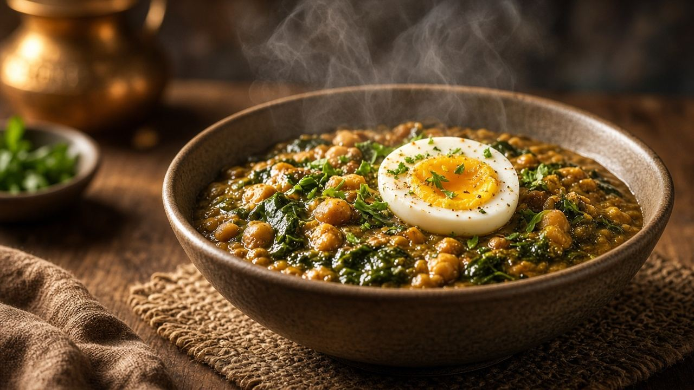

دايت
الأكل النباتي: بروتين متنوع، وB12 ما يتنسيش
الكلام ده معلومة عامة، مش كشف. لو بتشرب دوا أو عندك مرض، اسأل الدكتور قبل ما تغيّر الأكل أو الدوا.

النباتي اللي فيه بيض وألبان أسهل في تغطية البروتين. اللي من غير لحم وسمك وبيض وألبان يحتاج تخطيط أوضح. البروتين النباتي بيتوزع على اليوم: عدس، فول، حمص، لوبيا، فول صويا أو توفو لو متاح، ومكسرات، ولبن أو زبادي لو مش ممتنع عنهم. حبة رز لوحدها مش وجبة نباتية متكاملة.
فيتامين B12 موجود أساسًا في المنتجات الحيوانية. اللي مش بياكلها يحتاج مصدر مدعّم أو مكمل، وده قرار مع طبيب أو أخصائي، خصوصًا في الحمل. نقصه بيتأخر في ظهوره وبيأثر على الأعصاب والدم، فمش حاجة تتساب لحد الإرهاق. الحديد النباتي امتصاصه أقل؛ العدس والسبانخ مع مصدر فيتامين C زي الليمون أو الفلفل بيحسّنوا الامتصاص، والشاي مع الأكل مباشرة بيقلله عند بعض الناس.
النباتي مش دايت خفيف بالضرورة. مقليات وحلويات وعصاير وعيش كتير ممكن تكون نباتية وتزوّد الوزن. والعكس: طبق عدس وسلطة وزبادي بيبقى شبعان من غير اسم نظام.
الأطفال والنساء الحوامل اللي بيغيّروا لنمط نباتي صارم يحتاجوا متابعة، مش مقال. ولو السبب رغبة أخلاقية، التخطيط بيخلّيها تستمر. ولو السبب إن اللحم «بيسمّم»، الجملة دي أكبر من الدليل. اللحوم المصنعة الكتير مرتبطة بمخاطر، والقطعة المشوية ضمن طبق متوازن حاجة تانية.